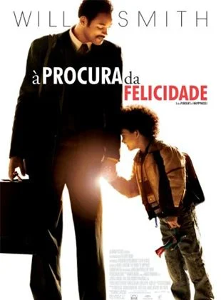

Repercussão
Em Busca da Felicidade teve uma repercussão amplamente positiva, sendo elogiado por sua história emocionante e pela atuação marcante de Will Smith, que lhe rendeu indicações ao Oscar e ao Globo de Ouro. O público se conectou profundamente com a trajetória inspiradora de superação de Chris Gardner, tornando o filme um sucesso global, arrecadando mais de US$ 307 milhões. Apesar de algumas críticas sobre o tom melodramático, a obra se estabeleceu como um símbolo de resiliência e esperança, impactando pessoas ao redor do mundo e consolidando seu legado como uma das histórias mais motivadoras do cinema.
 Volte do Início!